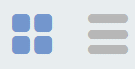

Базовые операции
Содержание
Создание
Для создания нового бизнес-процесса необходимо перейти в левом меню в пункт «Редактор бизнес-процессов» или через верхнее меню «Раздел администратора – Управление процессами – Модели бизнес-процессов».
{kind=link}
Откроется форма создания карточки процесса:
{kind=link}
п/п |
Наименование |
Описание |
|---|---|---|
1 |
Идентификатор |
уникальный идентификатор |
2 |
Имя |
наименование создаваемого бизнес-процесса |
3 |
Ecos Type |
тип данных. При привязке к типу данных можно автоматически начинать процесс, если проставлен чекбокс (7). На форме редактора на основе типа данных будут подтягиваться роли, статусы и т.д. |
4 |
Раздел |
наименование раздела, в котором будет сохранен процесс. Если не заполнять, то сохранение происходит в раздел «По умолчанию». |
5 |
Форма |
указать для запуска (старта) процесса через форму. |
6 |
Включен |
включение процесса |
7 |
Автоматический старт процесса |
при создании объекта указанного типа процесс будет запущен автоматически. |
Сохранение и публикация
Процесс можно сохранить или сохранить о опубликовать.
{kind=link}
Список процессов
|  | представление в виде плитки|списка |
{kind=link}
Представление в виде списка:
{kind=link}
Для редактирования процесса в редакторе нажмите:
{kind=link}
Откроется конструктор бизнес-процесса
Карточка бизнес-процесса
Для созданного процесса доступны следующие опции:
{kind=link}
{kind=link}
{kind=link}
{kind=link}
Способы запуска бизнес-процесса
Существует два способа запуска бизнес-процесса:
Автоматический запуск БП при создании документа.
Осуществляется автоматически, если в описании БП указать необходимый «Ecos Type» и выставить флаг «Автоматический старт процесса» в положение истина.
Ручной запуск БП через форму
В описании БП в поле «Форма» можно указать форму запуска процесса, тогда ручной запуск осуществляется через «Меню» -> «Создать» (+).
Способы автоматического старта и ручного запуска могут использовать как вместе, так и отдельно, в зависимости от бизнес требований.
В независимости от того, каким образом осуществляется старт бизнес-процесса, для возможности запуска, он должен быть «включен».
Настройка меню
Для добавления процесса в меню «Создать»:
Перейти в настройку меню, нажав на шестеренку, потом кнопку «Настроить меню» справа сверхуы.
{kind=link}
Выбрать элемент меню, в котором будет находиться процесс. Навести на элемент и нажать кнопку «Добавить»:
{kind=link}
{kind=link}
{kind=link}
{kind=link}
Добавленный пункт меню:
{kind=link}
Форма запуска БП
{kind=link}
Форма задачи БП
{kind=link}